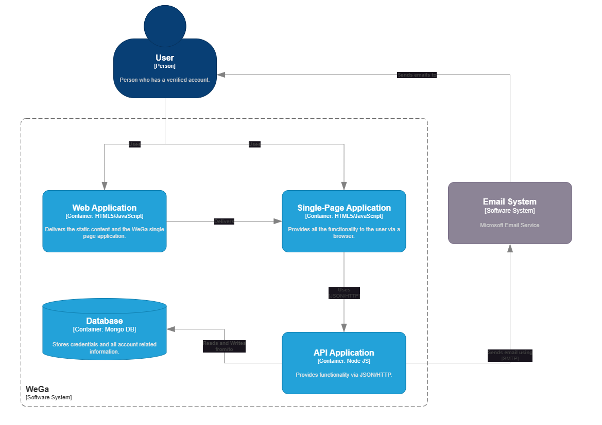
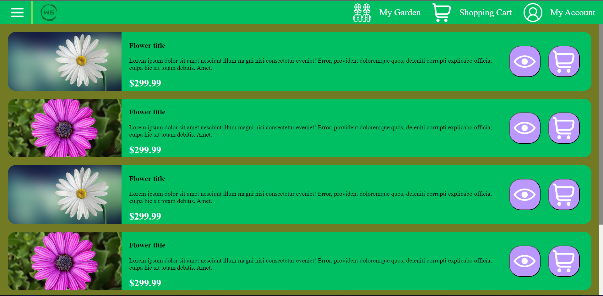
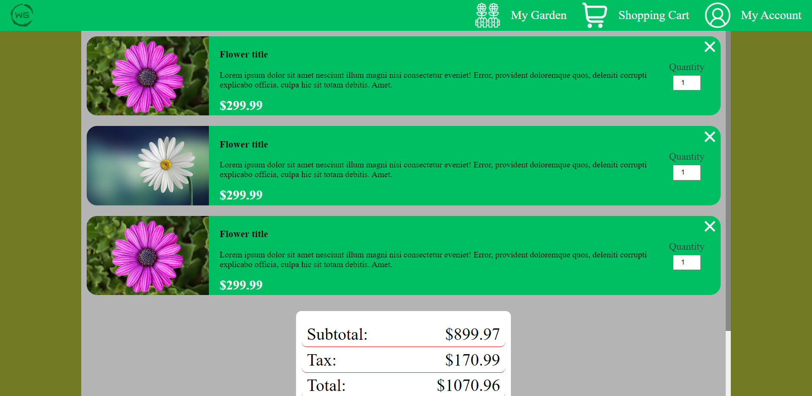
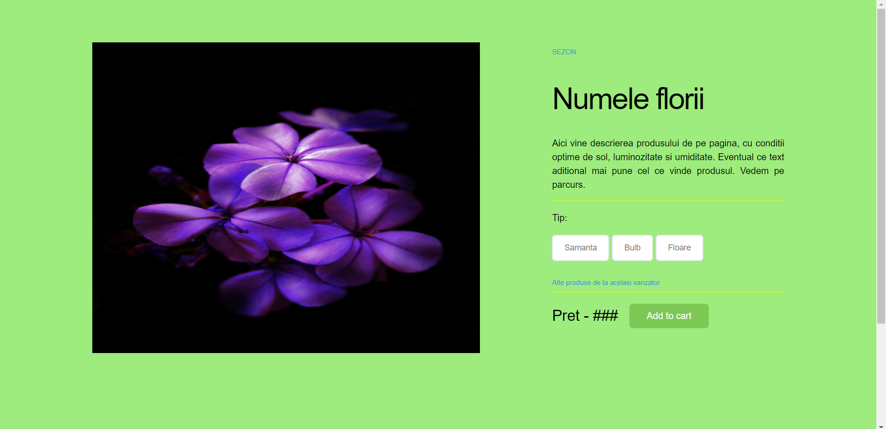

- Authors: B5
- Turtureanu Cosmin
- Scutaru Iulian-Tudor
- Bourceanu Adrian
1. Introduction
1.1 Purpose & Product Scope
The software product that is hereby submitted to your viewing is titled Web Garden 1.0 and it allows the users to interact with a vast array of functionalities. The main goal of our website is to allow customers buy flowers for themselves and sell other flowers that they cultivate. To this end, the users may create an account on our platform and manage a list of favorite flowers that they intend to buy. The flowers will be determined to be ready for purchase after their pictures will be run through an incredibly complex color analysis algorithm (a third party software), and, depending on the chromatic density of the image, an email and browser notification will be sent to the client. The platform also allows users to put up flowers for sale through an easy-to-use interface.
1.2 Intended audience
This product is intended for people that are passionate with the subject of horticulture, but also for people that want to buy some flowers for themselves or give them to someone else, as a gift. The possibilities are endless.
1.3 References
2. Overall description
2.1 Product perspective
Web Garden is a standalone, novel, self-contained product that is available to users online. The major components of the overall system is shown below:
2.2 Product functions
The product allows users to perform the following actions:
- login/logout
- sign up
- change password
- follow the development of flowers
- buy flowers
- sell flowers
- plant flowers
- receive notifications on the current weather and the state of the flowers
2.3 Operating environment
This is a web application that can be interacted with through any of the widely and freely available browsers that exist (Chrome, Firefox, Opera, Safari, etc.). As a result, the product runs independent of the operating system, and so it can be accessed by Windows, Linux, MacOS and even TempleOS users. There are no known conflicts with any other application on a user's computer.
2.4 Design and implementation constraints
This application has been written entirely in HTML, CSS and Javascript. On the server side, it uses Node.JS for handling client requests and Mongo DB for managing the database. It does not utilise any frameworks or any other tools that would've made working on it much easier.
2.5 User documentation
The current document is considered user documentation and it is readily available on the website, on the main page and on the landing page, by clicking the 'Help' button at the bottom.
2.6 Assumptions and dependencies
This application is dependent on the current Web Technologies standards. It also depends on the Node.JS and Mongo DB technologies. Any failure on the part of these technologies will ultimately lead to the downfall of the web application, rendering it useless. The developers of this web app do not take responsibility for the maintenance of third-party technologies, nor do they offer warranty towards the suitability of this application for any purpose, not even on as-is basis.
2.7 Arhitecture


3. External interface requirements
3.1 User interfaces
Index page

This is the first page a non-logged user will see when accessing the website. From here, the user can either login, signup, go to 'about' or access this documentation through 'help'.
Login page

This is the page used to log into an user's account. The required fields for logging in are the email/username and the password. There is also a checkbox for the user to specify that their credentials should be stored locally.
In case the user forgot their password, they can click on the "I forgot my password" link, from where they can reset the forgotten password.
Signup page

This is the page used to create an user account. The required fields are the email, the password and the username. The email and the username shall uniquely identify an user, so you cannot create multiple accounts with the same email address or the same username.
Password reset page

This page can be used in order to reset your password, in case you forgot it. The required fields are the email address associated with your account. After that, you will receive an email from where you can input your new password that you will use for logging in.
About page

This page shows information about the product and their developers. It is also used by us as a space for announcing changes to the webpage architecture and design.
Main page

This is the main page of the website and it provides the functionality for filtering flowers, subscribing to the watchlist of a specific flower and adding the desired flowers to your shopping cart.
My account

This page can be used to check for notifications, view your watchlist or edit your account information and settings.
My garden

This page can be used to check the current status of your planted flowers. You can check each item's preferred environment and the current environment by clicking on their attached button.
Shopping cart

You can use this page in order to finish your purchase. There, you can review the subtotal of your cart, the tax and the total payment for buying the added flowers.
Product page

This page describes the flower and its preferred conditions in more detail. From here, you can also see more products from the same seller, in case you have bought from them in the past and enjoyed their products.
You can add an item to your cart from this page as well.
3.2 Software interfaces
Database
The app makes use of a noSQL database, Mongo DB, to keep track of its data, including transactions, sales offers posted by users, the details of each product put up for sale and the general details surounding the species of flowers. It also contains a collection 'category' for a better optimisation and classification of the products on display. We have chosen Mongo DB for an easier integration on the backend part, due its ease of use and reliability. We are running the database in a Docker container.
Server
We decided to go with Node.js due to its ability to make use of JavaScript on the backend side as well, therefore cutting down on development time, by using the same conventions. It also makes the code easier to maintain. On top of that, Node.js makes it very easy to connect a server to a Mongo DB database through it's variety of drivers, capable of handling a large number of requests. It also has a variety of open source libraries that help with standard functionalities, such as Nodemailer when it comes to sending emails of any kind.
3.3 Communication interfaces
Account interface
The endpoints used for this interface are register, login, logout, reset-password and verify-email and they are responsible for managing the users' accounts securely as well as providing assistance in the case of users mishandling their account credentials.
Product interface
The endpoints used for this interface are plantedFlowers, readyFlowers, notifs, watchlist and add-to-watchlist and they are responsible for providing the basic functionality of the online store aspect of the app, meaning selling, buying and keeping track of plants.
4. System features
4.1 Login/Logout
The website allows a user to log in and out of the application. Having an account is mandatory in order to access to full suite of features in the app. In order to login, the user must provide their email or username, together with the password associated with their account. The website will also offer them the choice of whether or not they wish to stay logged in in their current browser.
4.2 Sign Up
In order to sign up, a client who is not already a registered user must navigate to the Sign Up page and introduce the following details: email address, username and password. Afterwards, they will receive an email asking them to confirm their address.
4.3 Change password
For security reasons, the database does not store the passwords of the users. Instead, the user who forgot their password and can no longer access their account must enter their email address in the input field and await an email that will provide them with a link to introduce a new password.
4.4 Follow the development of flowers
In order to do this, the user who is looking to sell flowers must go to the 'My Garden' page on the website and check the section labelled 'Flori in curs de crestere'. By pressing the 'Verifica' button, a pop up window will show, displaying information about the selected flower, such as its name, current growth status and environmental conditions.
Simultaneously, the user looking to buy flowers must go to the 'My Account' page, check the section labelled 'Florile pe care le urmaresti', then press the 'Verifica' button and have the behaviour described above play out. Furthermore, users will be notified by email and by a browser notification when the status of one of the flowers changes.
4.5 Buy flowers
In order to buy a flower, the logged in user must first select the flower that they wish to buy, then click the 'Add to cart ' button on the product page, or the shopping cart item next to the flower. They will then be redirected to their shopping, where they will be able to see all the products they have added to their basket. There, they will be able to complete their order and will be redirected to the payment page.
4.6 Sell flowers
In order to sell a flower, the logged in user must go to the specific form page and input the required information about the product he's about to auction. These range from basic properties like name, price and description to more specific information, such as optimal conditions for growing or indexing data, such as season and category of plants. Upon clicling submit, the user will be redirected to the product page of the plant, displayed for sale.
4.7 Receive notifications about your flowers
When the environment conditions become unsuitable for your flowers, you will receive an email and browser notification about this. This decision is made by comparing the optimal conditions for the flowers with the data provided to the application by a third-party weather software. If it is determined that they fall out of a specific sensibility range,you will be notified about it so that you can take the proper measures and shield your flowers from hazard.
5. Other non-functional requirements
-
The webpage should preferably score at least 90 points on PageSpeed Insights.
-
The site and all its pages have to be responsive on all main types of display resolutions, whether it's Phone, Tablet, Laptop or Desktop. Obscure devices such as your bootleg wireless earphones with a display on the case and internet access do not count.
5.2 Security requirements
-
Passwords will not be stored in the database, but rather their hashed version.
-
Every information entered by the user shall follow GDPR regulations.
-
Every user input should, preferably, be properly sanitized in order to avoid Database Injections.
-
Every html file should, preferably, be properly sanitized in order to avoid Cross Site Scripting
-
User cookies should, preferably, be encrypted as to keep private information such as emails hidden from inspect tools of a browser.